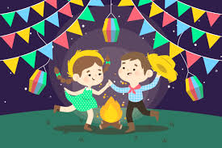

Festa Junina

Os historiadores apontam que as origens da festa junina estão diretamente relacionadas a festividades pagãs realizadas na Europa na passagem da primavera para o verão, momento chamado de solstício de verão. Essas festas eram realizadas como forma de afastar os maus espíritos e qualquer praga que pudesse atingir a colheita. Para melhor entendermos isso, é preciso considerar que o solstício de verão no hemisfério norte acontece exatamente no mês de junho.
As comemorações realizadas por diferentes povos pagãos europeus começaram a ser cristianizadas a partir do momento em que o Cristianismo se consolidou como a principal região do continente europeu. Assim, a festa originalmente pagã foi incorporada ao calendário festivo do catolicismo.
Essa foi uma prática comum da Igreja Católica. Para facilitar a conversão dos diferentes povos pagãos, fazia-se uma aculturação das festividades, adicionando-as ao calendário católico e acrescentando nelas elementos cristãos. Outra festa na qual essa prática se repetiu, por exemplo, foi a comemoração do Natal, que acontece todo mês de dezembro.
A cristianização da festa está diretamente relacionada ao estabelecimento de comemorações de importantes figuras do catolicismo, exatamente na época da passagem para o verão, entre as quais se destacam Santo Antônio (homenageado dia 13 de junho), São João (dia 24)e São Pedro (dia 29). Por fim, muitos elementos típicos das comemorações pagãs ganharam novo significado.
A chegada da festa junina ao Brasil
O começo da festa junina ao Brasil remonta ao século XVI. As festas juninas eram tradições bastante populares na Península Ibérica (Portugal e Espanha) e, por isso, foram trazidas para cá pelos portugueses durante a colonização, assim como muitas outras tradições. Quando introduzida no Brasil, a festa era conhecida como festa joanina, em referência a São João, mas, ao longo dos anos, teve o nome alterado para festa junina, em referência ao mês no qual ocorre, junho.
Inicialmente, a festa possuía uma forte tom religioso – conotação essa que se perdeu em parte, uma vez que é vista por muitos mais como uma festividade popular do que religiosa. Além disso, a evolução da festa junina no Brasil fez com que ela se associasse a símbolos típicos das zonas rurais.
O crescimento da festividade aconteceu sobretudo no Nordeste, região que atualmente possui as maiores festas. A maior festa junina do país acontece na cidade de Campina Grande, localizada no estado da Paraíba. Em 2017, a estimativa do evento era receber aproximadamente 2,5 milhões de pessoas
Durante as festas juninas no Brasil, são realizadas danças típicas, como as quadrilhas. Também há produção de inúmeras comidas à base de milho e amendoim, como canjica, pamonha, pé de moleque, além de bebidas como o quentão. Outra característica muito comum é a de se vestir de caipira de maneira caricata.
Feito por Felipe 5C para a prof Thais.